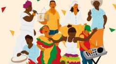

Sociologia

Cidadania e Política
A palavra política está sustentada por uma expressão grega - polis, que quer dizer cidade e a palavra cidadania se fundamenta em um termo...

Cultura
Para sociologia, cultura é tudo aquilo que resulta da criação humana. Não existe cultura superior ou inferior, melhor ou pior, mas sim culturas diferentes...
Desigualdade Social
Desigualdade social é um fenômeno existente quando a sociedade não conta com uma distribuição igualitária de renda. A distribuição desigual...